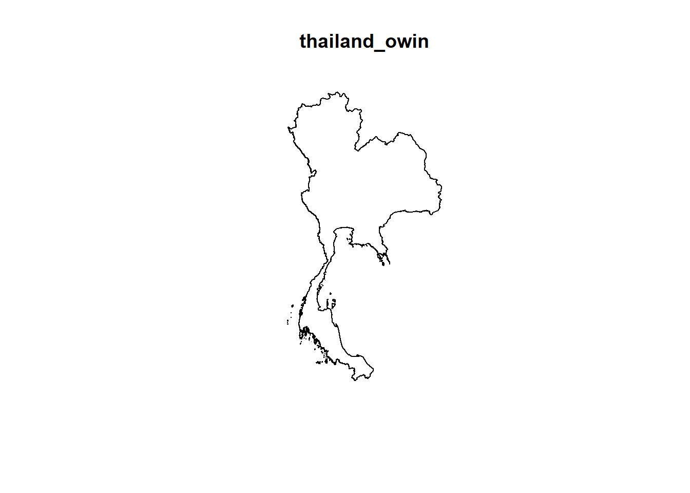
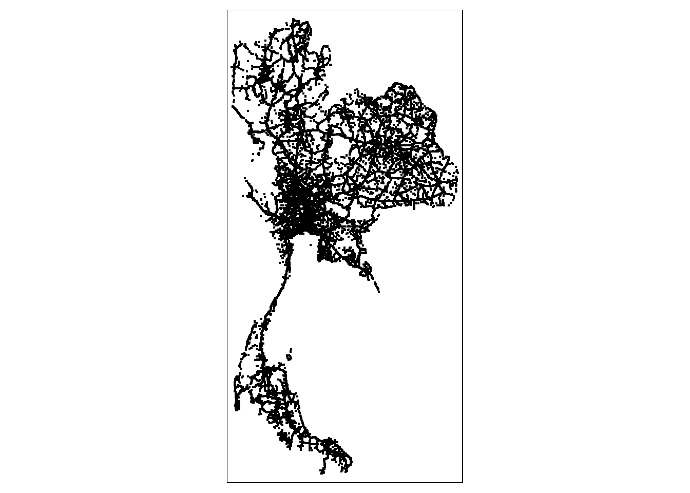
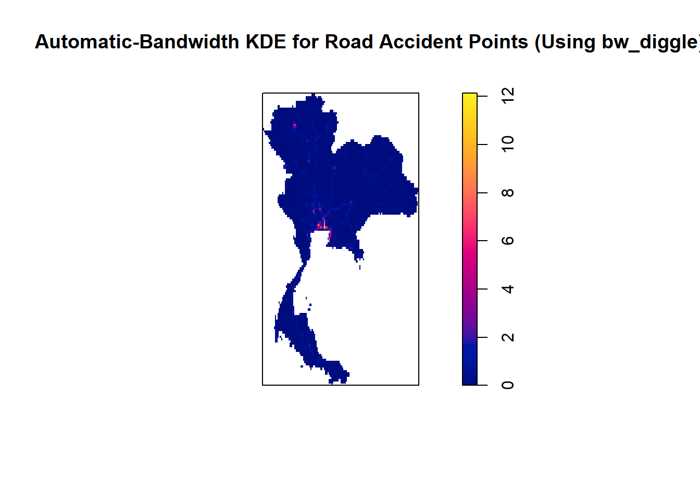

pacman::p_load(raster, sf, st, lubridate, tidyverse, tmap, ggplot2, spatstat)Take-home Exercise 3: Prototyping Modules for Geospatial Analytics Shiny Application
Project Overview
Main Responsibilities
- 1st Order Spatial Point Patterns Analysis
- Kernel Density Estimation (KDE) Maps
- Nearest Neighbor Analysis using Clark-Evans Test
- 2nd Order Spatial Point Patterns Analysis
- Complete Spatial Randomness (CSR) Test using G, F, K and L functions
Technical Report
1.0 Loading Packages
2.0 Importing Datasets into R Environment
In this exercise, we will be using the following datasets:
| Data | Type | Format |
|---|---|---|
| ➡️Thailand Road Accident [2019-2022] | Aspatial | .csv | | ||
| ➡️Thailand Subnational Administrative Boundaries | Geospatial | .shp | | ||
| Geofabrik’s OpenStreetMap road data for Thailand | Geospatial | .shp |
The Thailand Subnational Administrative Boundaries dataset is available in ESRI shapefile format. It comprises the administrative boundaries at various levels within Thailand.
Level 0: country
Level 1: province
Level 2: district
Level 3: sub-district or tambon
thailand_sf <- st_read(dsn = "data/geospatial",
layer = "tha_admbnda_adm0_rtsd_20220121")Reading layer `tha_admbnda_adm0_rtsd_20220121' from data source
`C:\kt526\IS415-GAA\Take-home_Ex\Take-home_Ex03\data\geospatial'
using driver `ESRI Shapefile'
Simple feature collection with 1 feature and 13 fields
Geometry type: MULTIPOLYGON
Dimension: XY
Bounding box: xmin: 97.34336 ymin: 5.613038 xmax: 105.637 ymax: 20.46507
Geodetic CRS: WGS 84thailand_province_sf <- st_read(dsn = "data/geospatial", layer = "tha_admbnda_adm1_rtsd_20220121")Reading layer `tha_admbnda_adm1_rtsd_20220121' from data source
`C:\kt526\IS415-GAA\Take-home_Ex\Take-home_Ex03\data\geospatial'
using driver `ESRI Shapefile'
Simple feature collection with 77 features and 16 fields
Geometry type: MULTIPOLYGON
Dimension: XY
Bounding box: xmin: 97.34336 ymin: 5.613038 xmax: 105.637 ymax: 20.46507
Geodetic CRS: WGS 84There are a total of 77 provinces in Thailand.
tmap_mode("plot")
thailand_map <- tm_shape(thailand_sf) +
tm_borders(alpha = 0.8)
thailand_province_map <- tm_shape(thailand_province_sf) +
tm_polygons("ADM1_EN") +
tm_borders(alpha = 0.8) +
tm_legend(show=FALSE)
tmap_arrange(thailand_map, thailand_province_map, ncol = 2)
2.2 Importing Aspatial Data
accidents <- read_csv("data/aspatial/thai_road_accident_2019_2022.csv")3.0 Data Wrangling
3.1 Preparing a study area layer
3.1.1 Extract relevant columns
Firstly, we use the colnames() to see all the column names present in thailand_province_sf.
colnames(thailand_province_sf) [1] "Shape_Leng" "Shape_Area" "ADM1_EN" "ADM1_TH" "ADM1_PCODE"
[6] "ADM1_REF" "ADM1ALT1EN" "ADM1ALT2EN" "ADM1ALT1TH" "ADM1ALT2TH"
[11] "ADM0_EN" "ADM0_TH" "ADM0_PCODE" "date" "validOn"
[16] "validTo" "geometry" Next, from thailand_province_sf, we will select the following relevant columns so that its easier for our analysis later on.
ADM1_EN
ADM1_PCODE
geometry
thailand_province_sf_extracted <- thailand_province_sf %>%
select(ADM1_EN,
ADM1_PCODE,
geometry)3.1.2 Check coordinate system
st_crs(thailand_province_sf_extracted)Coordinate Reference System:
User input: WGS 84
wkt:
GEOGCRS["WGS 84",
DATUM["World Geodetic System 1984",
ELLIPSOID["WGS 84",6378137,298.257223563,
LENGTHUNIT["metre",1]]],
PRIMEM["Greenwich",0,
ANGLEUNIT["degree",0.0174532925199433]],
CS[ellipsoidal,2],
AXIS["latitude",north,
ORDER[1],
ANGLEUNIT["degree",0.0174532925199433]],
AXIS["longitude",east,
ORDER[2],
ANGLEUNIT["degree",0.0174532925199433]],
ID["EPSG",4326]]3.1.3 Transform geographic coordinate system (GCS) and a projected coordinate system (PCS)
thailand_province_sf_extracted <- st_transform(thailand_province_sf_extracted, crs = 32648)
st_geometry(thailand_province_sf_extracted)Geometry set for 77 features
Geometry type: MULTIPOLYGON
Dimension: XY
Bounding box: xmin: -313055.3 ymin: 621843.5 xmax: 568269.6 ymax: 2271054
Projected CRS: WGS 84 / UTM zone 48N
First 5 geometries:st_crs(thailand_province_sf_extracted)Coordinate Reference System:
User input: EPSG:32648
wkt:
PROJCRS["WGS 84 / UTM zone 48N",
BASEGEOGCRS["WGS 84",
ENSEMBLE["World Geodetic System 1984 ensemble",
MEMBER["World Geodetic System 1984 (Transit)"],
MEMBER["World Geodetic System 1984 (G730)"],
MEMBER["World Geodetic System 1984 (G873)"],
MEMBER["World Geodetic System 1984 (G1150)"],
MEMBER["World Geodetic System 1984 (G1674)"],
MEMBER["World Geodetic System 1984 (G1762)"],
MEMBER["World Geodetic System 1984 (G2139)"],
ELLIPSOID["WGS 84",6378137,298.257223563,
LENGTHUNIT["metre",1]],
ENSEMBLEACCURACY[2.0]],
PRIMEM["Greenwich",0,
ANGLEUNIT["degree",0.0174532925199433]],
ID["EPSG",4326]],
CONVERSION["UTM zone 48N",
METHOD["Transverse Mercator",
ID["EPSG",9807]],
PARAMETER["Latitude of natural origin",0,
ANGLEUNIT["degree",0.0174532925199433],
ID["EPSG",8801]],
PARAMETER["Longitude of natural origin",105,
ANGLEUNIT["degree",0.0174532925199433],
ID["EPSG",8802]],
PARAMETER["Scale factor at natural origin",0.9996,
SCALEUNIT["unity",1],
ID["EPSG",8805]],
PARAMETER["False easting",500000,
LENGTHUNIT["metre",1],
ID["EPSG",8806]],
PARAMETER["False northing",0,
LENGTHUNIT["metre",1],
ID["EPSG",8807]]],
CS[Cartesian,2],
AXIS["(E)",east,
ORDER[1],
LENGTHUNIT["metre",1]],
AXIS["(N)",north,
ORDER[2],
LENGTHUNIT["metre",1]],
USAGE[
SCOPE["Navigation and medium accuracy spatial referencing."],
AREA["Between 102°E and 108°E, northern hemisphere between equator and 84°N, onshore and offshore. Cambodia. China. Indonesia. Laos. Malaysia - West Malaysia. Mongolia. Russian Federation. Singapore. Thailand. Vietnam."],
BBOX[0,102,84,108]],
ID["EPSG",32648]]3.1.4 Create OWIN object
thailand_owin <- as.owin(thailand_province_sf_extracted)3.1.5 Plot OWIN object
plot(thailand_owin)
3.2 Preparing a road accident layer
3.2.1 Extract relevant columns
colnames(accidents) [1] "acc_code" "incident_datetime"
[3] "report_datetime" "province_th"
[5] "province_en" "agency"
[7] "route" "vehicle_type"
[9] "presumed_cause" "accident_type"
[11] "number_of_vehicles_involved" "number_of_fatalities"
[13] "number_of_injuries" "weather_condition"
[15] "latitude" "longitude"
[17] "road_description" "slope_description" Similar to thailand_province_sf, we will select the following relevant columns from accidents.
latitude
longtitude
incident_datetime
province_en
presumed_cause
weather_condition
number_of_fatalities
number_of_injuries
accidents_extracted <- accidents %>% select(latitude,
longitude,
incident_datetime,
province_en,
presumed_cause,
weather_condition,
number_of_fatalities,
number_of_injuries)str(accidents_extracted)tibble [81,735 × 8] (S3: tbl_df/tbl/data.frame)
$ latitude : num [1:81735] 15 15.2 12.4 18.6 15.9 ...
$ longitude : num [1:81735] 100.9 104.9 99.9 98.8 100.6 ...
$ incident_datetime : POSIXct[1:81735], format: "2019-01-01 00:00:00" "2019-01-01 00:03:00" ...
$ province_en : chr [1:81735] "Loburi" "Ubon Ratchathani" "Prachuap Khiri Khan" "Chiang Mai" ...
$ presumed_cause : chr [1:81735] "driving under the influence of alcohol" "speeding" "speeding" "driving under the influence of alcohol" ...
$ weather_condition : chr [1:81735] "clear" "clear" "clear" "clear" ...
$ number_of_fatalities: num [1:81735] 0 0 1 0 0 0 0 1 3 0 ...
$ number_of_injuries : num [1:81735] 2 2 0 1 0 2 2 0 0 1 ...colSums(is.na(accidents_extracted)) latitude longitude incident_datetime
359 359 0
province_en presumed_cause weather_condition
0 0 0
number_of_fatalities number_of_injuries
0 0 accidents_extracted <- na.omit(accidents_extracted)colSums(is.na(accidents_extracted)) latitude longitude incident_datetime
0 0 0
province_en presumed_cause weather_condition
0 0 0
number_of_fatalities number_of_injuries
0 0 3.2.2 Converting aspatial data into geospatial data
accidents_extracted <- st_as_sf(accidents_extracted,
coords = c("longitude", "latitude"),
crs=4326) %>%
st_transform(crs = 32648)Checking the number of unique provinces in accidents_extracted.
unique(accidents_extracted$province_en) [1] "Loburi" "Ubon Ratchathani"
[3] "Prachuap Khiri Khan" "Chiang Mai"
[5] "Nakhon Sawan" "Mae Hong Son"
[7] "Chumphon" "Sing Buri"
[9] "Songkhla" "Trat"
[11] "Lamphun" "Phuket"
[13] "Saraburi" "Ratchaburi"
[15] "Phra Nakhon Si Ayutthaya" "Nakhon Ratchasima"
[17] "Nakhon Si Thammarat" "Kalasin"
[19] "Chaiyaphum" "Suphan Buri"
[21] "Phetchaburi" "Chai Nat"
[23] "Phrae" "Prachin Buri"
[25] "Nakhon Pathom" "Phetchabun"
[27] "Ang Thong" "Kanchanaburi"
[29] "Nonthaburi" "Samut Prakan"
[31] "Bangkok" "Phayao"
[33] "Phatthalung" "Yala"
[35] "Maha Sarakham" "Surat Thani"
[37] "Amnat Charoen" "Nong Khai"
[39] "Nan" "Phangnga"
[41] "Narathiwat" "Chanthaburi"
[43] "Samut Sakhon" "Samut Songkhram"
[45] "Phitsanulok" "Pathum Thani"
[47] "Tak" "Loei"
[49] "Chiang Rai" "Chachoengsao"
[51] "Buri Ram" "Uthai Thani"
[53] "Krabi" "Surin"
[55] "Udon Thani" "Si Sa Ket"
[57] "Uttaradit" "Khon Kaen"
[59] "Kamphaeng Phet" "Yasothon"
[61] "Satun" "Nakhon Nayok"
[63] "Rayong" "Chon Buri"
[65] "buogkan" "Sa Kaeo"
[67] "Nong Bua Lam Phu" "Roi Et"
[69] "Sakon Nakhon" "Mukdahan"
[71] "Nakhon Phanom" "Phichit"
[73] "Pattani" "Sukhothai"
[75] "Trang" "Lampang"
[77] "Ranong" "unknown" There are a total of 78 provinces? An unknown province is present in the unique list.
Remove unknown province.
accidents_extracted <- accidents_extracted %>%
filter(province_en != "unknown")3.2.3 Check coordinate system
st_crs(accidents_extracted)Coordinate Reference System:
User input: EPSG:32648
wkt:
PROJCRS["WGS 84 / UTM zone 48N",
BASEGEOGCRS["WGS 84",
ENSEMBLE["World Geodetic System 1984 ensemble",
MEMBER["World Geodetic System 1984 (Transit)"],
MEMBER["World Geodetic System 1984 (G730)"],
MEMBER["World Geodetic System 1984 (G873)"],
MEMBER["World Geodetic System 1984 (G1150)"],
MEMBER["World Geodetic System 1984 (G1674)"],
MEMBER["World Geodetic System 1984 (G1762)"],
MEMBER["World Geodetic System 1984 (G2139)"],
ELLIPSOID["WGS 84",6378137,298.257223563,
LENGTHUNIT["metre",1]],
ENSEMBLEACCURACY[2.0]],
PRIMEM["Greenwich",0,
ANGLEUNIT["degree",0.0174532925199433]],
ID["EPSG",4326]],
CONVERSION["UTM zone 48N",
METHOD["Transverse Mercator",
ID["EPSG",9807]],
PARAMETER["Latitude of natural origin",0,
ANGLEUNIT["degree",0.0174532925199433],
ID["EPSG",8801]],
PARAMETER["Longitude of natural origin",105,
ANGLEUNIT["degree",0.0174532925199433],
ID["EPSG",8802]],
PARAMETER["Scale factor at natural origin",0.9996,
SCALEUNIT["unity",1],
ID["EPSG",8805]],
PARAMETER["False easting",500000,
LENGTHUNIT["metre",1],
ID["EPSG",8806]],
PARAMETER["False northing",0,
LENGTHUNIT["metre",1],
ID["EPSG",8807]]],
CS[Cartesian,2],
AXIS["(E)",east,
ORDER[1],
LENGTHUNIT["metre",1]],
AXIS["(N)",north,
ORDER[2],
LENGTHUNIT["metre",1]],
USAGE[
SCOPE["Navigation and medium accuracy spatial referencing."],
AREA["Between 102°E and 108°E, northern hemisphere between equator and 84°N, onshore and offshore. Cambodia. China. Indonesia. Laos. Malaysia - West Malaysia. Mongolia. Russian Federation. Singapore. Thailand. Vietnam."],
BBOX[0,102,84,108]],
ID["EPSG",32648]]3.2.4 Create ppp objects using sf method
accidents_extracted_ppp <- as.ppp(accidents_extracted)
summary(accidents_extracted_ppp)Marked planar point pattern: 81351 points
Average intensity 6.160696e-08 points per square unit
*Pattern contains duplicated points*
Coordinates are given to 2 decimal places
i.e. rounded to the nearest multiple of 0.01 units
marks are of type 'double'
Summary:
Min. 1st Qu.
"2019-01-01 00:00:00.0000" "2020-01-16 14:40:00.0000"
Median Mean
"2021-01-02 18:30:00.0000" "2021-01-08 10:38:03.3506"
3rd Qu. Max.
"2022-01-02 19:17:00.0000" "2022-12-31 23:55:00.0000"
Window: rectangle = [-255162.2, 555471.8] x [639404.8, 2268356.6] units
(810600 x 1629000 units)
Window area = 1.32048e+12 square units3.2.5 Check for duplicated point events
any(duplicated(accidents_extracted_ppp))[1] TRUEsum(multiplicity(accidents_extracted_ppp) > 1)[1] 15The output shows that there are 15 duplicated point events.
3.2.6 Removing duplicated point events using jittering approach
accidents_ppp_jit <- rjitter(accidents_extracted_ppp,
retry=TRUE,
nsim=1,
drop=TRUE)
any(duplicated(accidents_ppp_jit))[1] FALSE3.3 Combine point events with OWIN object
accidentsTHAI_ppp = accidents_extracted_ppp[thailand_owin]3.3.1 Visualising Point Symbol Map
tmap_mode("plot")
tm_shape(accidents_extracted) +
tm_dots()
4.0 1st Order Spatial Point Patterns Analysis
4.1 Kernel Density Estimation (KDE) Maps
accidentsTHAI_ppp.km <- rescale(accidentsTHAI_ppp, 1000, "km")
kde_accidentsTHAI_diggle <- density(accidentsTHAI_ppp.km,
sigma=bw.diggle,
edge=TRUE,
kernel="gaussian")
plot(kde_accidentsTHAI_diggle,
main = "Automatic-Bandwidth KDE for Road Accident Points (Using bw_diggle)")
Plotting Interactive KDE Maps
raster_kde_auto_diggle <- raster(kde_accidentsTHAI_diggle)
projection(raster_kde_auto_diggle) <- CRS("+init=EPSG:32648 +units=km")tmap_mode('view')
kde_adaptive_kernel <- tm_basemap(server = "OpenStreetMap.DE") +
tm_shape(raster_kde_auto_diggle) +
tm_raster("layer",
n = 7,
title = "KDE_Adaptive_Kernel",
style = "pretty",
alpha = 0.6) +
tm_shape(thailand_province_sf_extracted) +
tm_polygons(alpha=0.1,id="ADM1_EN") +
tmap_options(check.and.fix = TRUE)4.2 Nearest Neighbour Analysis using Clark-Evans Test
The test hypotheses are:
H0 = The spatial distribution of accident points are randomly distributed.
H1= The spatial distribution of accident points are not randomly distributed.
The 95% confidence interval will be used.
clarkevans.test(accidentsTHAI_ppp,
correction="none",
clipregion="thailand_owin",
alternative=c("clustered"),
nsim=99)
Clark-Evans test
No edge correction
Z-test
data: accidentsTHAI_ppp
R = 0.24639, p-value < 2.2e-16
alternative hypothesis: clustered (R < 1)Interpretations
R-value (0.29484) < 1 indicates clustered distribution
p-value (< 2.2e-16) < 0.05 (critical value)
Reject the null hypothesis (H0) that the spatial distribution of accident points are randomly distributed, signs of clusterings observed
5.0 2nd Order Spatial Point Patterns Analysis
5.1 Complete Spatial Randomness (CSR) Test
G function
F function
K function
L function
6.0 Notes
Necessary R packages:
| Analysis | Parameters / Inputs | Outputs | Shiny UI components |
| Kernel Density Estimation Maps |
|
Plot interactive KDE map(s) given inputs | Parameters / Inputs
Outputs
|
| Nearest Neighbour Analysis using Clark-Evans Test | |||
| Complete Spatial Randomness (CSR) Test |